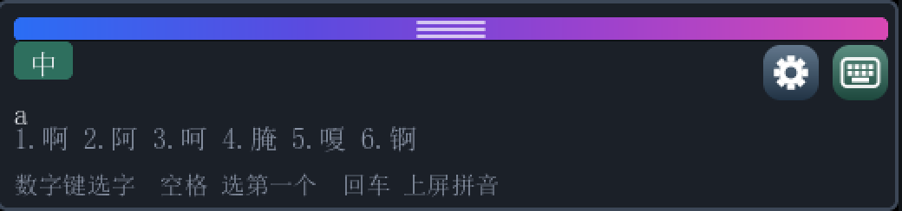
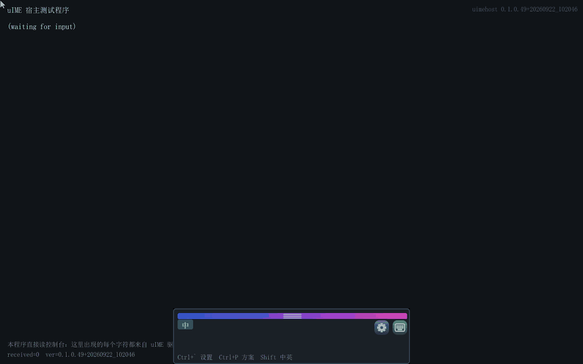
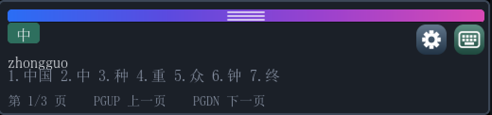
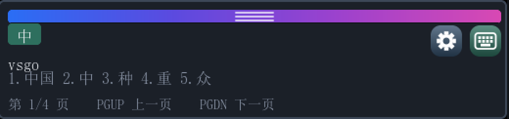
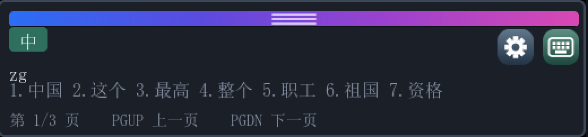
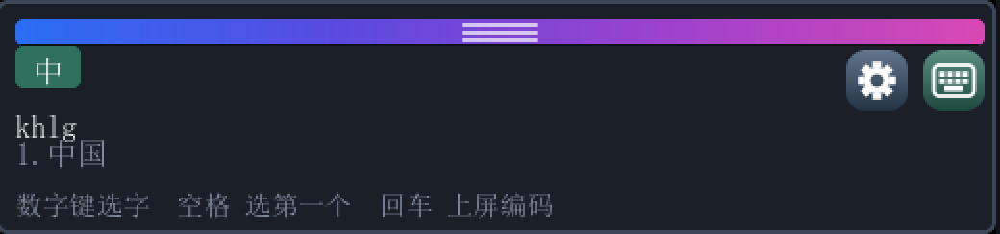
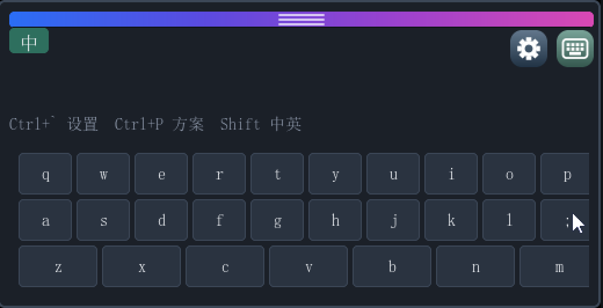
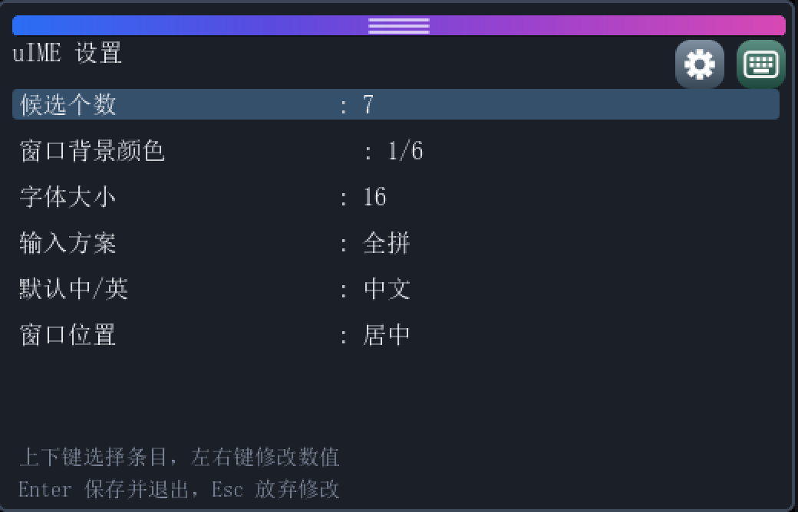
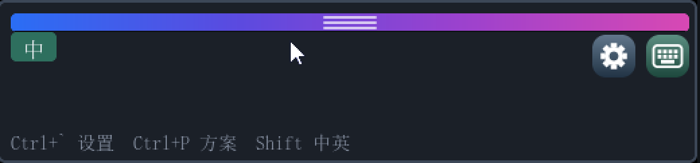
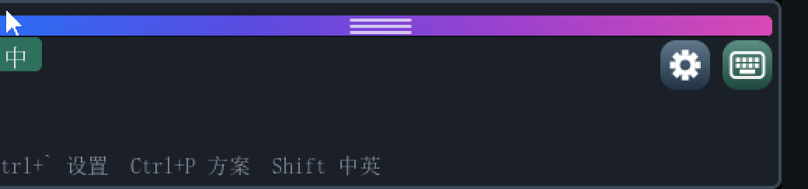

uIME 产品手册 uIME Product Manual
UEFI Shell 下的汉字输入法。以常驻驱动形态 load 进系统，接管控制台输入，把拼音翻译成汉字并以 Unicode 按键注入——任何读控制台的 UEFI 程序都能收到汉字，不需要为它改一行代码。
A Chinese input method for the UEFI Shell. Loaded as a resident driver, it takes over console input and injects Han characters as ordinary Unicode keystrokes — so any UEFI program that reads the console receives Chinese, without changing a line of its own.
01 · 它解决什么 01 · The problem
UEFI Shell 与绝大多数 UEFI 应用只认 ASCII：一次按键就是一个 EFI_INPUT_KEY.UnicodeChar，汉字（U+4E2D 这种）根本进不来。想在固件环境里编辑一个含中文的文件、在固件自带的编辑器里写中文，此前没有输入手段。
UEFI consoles speak ASCII. A keystroke is an EFI_INPUT_KEY.UnicodeChar, and a Han character like U+4E2D never arrives — which left no way to author Chinese content inside firmware.
uIME 把「输入法」这整件事下沉到控制台输入层：逐个候选词的翻译发生在按键到达宿主之前，选中的汉字经注入队列变成一个 UnicodeChar >= 0x80 的按键——宿主读到它，与读到一个普通的 Unicode 按键毫无区别。
uIME pushes the input method down to the console-input layer. Translation happens before the key reaches the host, and committed characters leave through an injection queue as UnicodeChar >= 0x80 keys — indistinguishable, to the host, from any other keystroke.


02 · 快速上手 02 · Getting started
交付物只有 uime.efi 一个。构建还会产出一个演示宿主，用来证明汉字真的到了另一个程序里；它不是产品的一部分，交付时可以不要。两者是两个角色，不是同一个程序的两个副本：
The deliverable is one file: uime.efi. The build also produces a demonstration host, used to prove the characters really reach another program; it is not part of the product and can be left out of a shipment. Two roles, not two copies of one program:
| 文件Image | 类型Module type | 职责Role |
|---|---|---|
uime.efi~2.3 MB |
DXE_DRIVER 常驻resident |
输入法本体，也是全部交付物。安装协议拦截层、建立悬浮窗、跑引擎。它是常驻的：入口返回后镜像不解体，包装留在系统里继续服务后续启动的程序。用 load 启动，或者编进固件卷。
The input method - and the entire deliverable. Installs the interception layer, creates the floating window, runs the engine. It stays resident - returning from the entry point does not tear it down. Start it with load, or compile it into a firmware volume. |
uimehost.efi~2.1 MB |
UEFI 应用UEFI application | 演示宿主。一个最小的、会读控制台的程序，用来证明汉字真的到了另一个程序里。它不是产品的一部分，交付时可以不要。 Demonstration host. A minimal console-reading program that proves the characters really reach another application. Not part of the product - ship without it. |
怎么启动它？
先 fs0: 建立当前目录再 load uime.efi；在 startup.nsh 里那一刻还没有当前目录，所以要写绝对路径 load fs0:\uime.efi。也可以把启动项指向 uime.efi（固件按 FilePath 加载），或者把它编进固件卷——磁盘上什么都不用放。
不能直接敲 uime.efi：Shell 的派发只接受应用镜像，驱动只能被 load、启动项或 dispatcher 启动。这是固件规则，不是本项目的选择。
How do you start it?
Run fs0: first, then load uime.efi. Inside startup.nsh there is no current directory yet, so use an absolute path: load fs0:\uime.efi. A boot option pointing at uime.efi works too (the firmware loads it by FilePath), and so does compiling it into a firmware volume - nothing on disk at all.
Typing uime.efi does not work: the Shell only dispatches application images; a driver is started by load, a boot option, or the dispatcher. Firmware rule, not a project decision.
启动顺序Boot order
顺序是强制的：驱动必须先于任何需要中文的应用程序。 The order is mandatory: the driver must precede any application that wants Chinese.
Shell> fs0: :: 先建立当前目录（或直接写绝对路径）:: install a current directory first (or spell the path absolutely)
FS0:\> load uime.efi :: 装上并常驻（窗口随即在屏幕上）:: install, resident (window appears)
Shell> uimehost.efi :: 再启动需要中文输入的应用程序:: then start whatever application needs Chinese[Uime] installed, resident 即就绪。The driver lands. Ready when the log shows [Uime] installed, resident.在自动启动脚本里：In the automated boot script:
:: startup.nsh:: startup.nsh
@echo -off
load fs0:\uime.efi :: 装上并常驻（那一刻还没有当前目录，必须写绝对路径）:: install, resident (no current directory yet, so spell the path absolutely)
uimehost.efi :: 演示宿主:: demonstration host卸载同样是必须干净的操作：失败时不报错，只是把控制台留在指向一块即将被释放的镜像的状态——那是静默损坏。用 dh 找到驱动的 image handle，再 unload 它的编号。
Unloading has to be clean too: its failure is not an error but silent corruption — the console left pointing into an image that is about to be discarded. Find the driver's image handle with dh, then unload its number.
03 · 界面导览 03 · The window
候选窗是三段式：状态片 + 拼音串 / 候选行 / 提示行。下面是它的结构（按实际像素布局绘制），右侧列出各部件的叫法与作用。 The window is a three-part stack: status chip + pinyin line / candidate row / hint row. The figure is drawn to the real pixel layout; the table names each part.
| 部件Part | 作用What it does |
|---|---|
| ① 拖动条① Grab bar | 四色渐变（蔚蓝→靛→紫→洋红），中间三道半透明白握把纹。按住即可拖动窗口。它在左右两侧避开了两个角上的按钮——按钮顶部只比它低 2 像素，满宽会把点齿轮变成拖窗口。 Four-colour gradient (azure → indigo → purple → magenta) with three translucent white grip lines. Drag the window by it. It deliberately stops short of the two corner buttons — their tops sit only 2px below, and a full-width bar would turn a click on the gear into a drag. |
| ② 中/英 状态片② Language chip | 显示当前中/英状态。它同时是个点击目标——点它切换中英，比记住 Shift / Ctrl+Space 好发现得多。 Shows the current Chinese/English mode, and is also a click target that toggles it — far more discoverable than remembering Shift or Ctrl+Space. |
| ③ 拼音串③ Pinyin line | 正在拼的内容。Backspace 退一个字母，Esc 丢弃整串。 What is being spelled. Backspace removes one letter, Esc discards the buffer. |
| ④ 候选行④ Candidate row | 按词频排名的候选词。整串词优先，不足时用首音节单字补齐。数字键选字，也可以直接点。 Candidates ranked by word frequency — whole words first, then single characters matching the leading syllable. Select with number keys or by clicking. |
| ⑤ 提示行⑤ Hint row | 按当前状态说话的一行，见 §05。它的文字存在标签之外——窗口每次换高度都整个重建，只写在标签里的文字重建后是空的。 A line that reports the keys that matter right now; see §05. Its text lives outside the label, because the window is rebuilt wholesale on every height change. |
| ⑥ 齿轮（设置）⑥ Gear (settings) | 打开设置对话框，等价于 Ctrl+`。 Opens the settings dialog, same as Ctrl+`. |
| ⑦ 软键盘⑦ Soft keyboard | 展开/收起三行 QWERTY 软键盘。展开时窗口加高。 Shows or hides a three-row QWERTY soft keyboard, growing the window when shown. |
图标是位图，不是字形。右上角两个按钮用的是距离场光栅化出来的 ARGB8888 位图，而不是字体里的符号——字库是 CJK 子集，键盘和齿轮这类符号不在覆盖范围内，用字形必然画成方框。 The icons are bitmaps, not glyphs. The two corner buttons use ARGB8888 bitmaps rasterised from a signed distance field rather than font glyphs: the fonts are CJK subsets with no keyboard or gear in them, and a missing glyph draws as an empty box.
04 · 打字与选字 04 · Typing & selecting

zhongguo 后：拼音串在上，候选行给出「中国」，提示行讲当前能按什么键。
After typing zhongguo: the pinyin line on top, 「中国」in the candidate row, and the hint row listing the keys that do something.
| 按键Key | 作用Effect |
|---|---|
| a–z ; | 拼音字母。; 是微软双拼方案里 ing 的位置。Pinyin letters. ; is where Microsoft double-pinyin puts ing. |
| 1–9 | 选对应候选词并上屏。Commit the numbered candidate. |
| Space | 选第一个候选词。Commit the first candidate. |
| Enter | 放弃候选，把拼音原样上屏。Dismiss candidates and commit the raw pinyin. |
| Backspace | 退一个拼音字母；缓冲为空时透传给宿主。Delete one pinyin letter; passed to the host when the buffer is empty. |
| Esc | 丢弃整串拼音。Discard the composition. |
| PgDn / PgUp | 下一页 / 上一页候选。Next / previous candidate page. |
| - = , . |
同样翻页（更早的键位，仍保留）。它们不再占提示行的位置。The same paging, from the earlier binding. Still supported, no longer advertised in the hint row. |
| Ctrl+Space | 显示/隐藏窗口，并切换中英。Show/hide the window and toggle Chinese/English. |
| 单击Single Shift | 切换中英。Toggle Chinese/English. |
| Ctrl+` | 打开设置对话框。Open the settings dialog. |
| Ctrl+P | 循环切换输入方案。Cycle the input scheme. |
英文模式下按键全部透传。切到「英」之后 uIME 不吞任何键，宿主拿到的是原始按键——宿主自己的快捷键不会失灵。 English mode passes every key through. Switched to English, uIME swallows nothing and the host sees raw keystrokes — its own shortcuts keep working.
05 · 翻页找字 05 · Paging
候选多于一页时，提示行会变成翻页提示——这正是「想找的字不在这页」这个问题的答案所在。 When there is more than one page, the hint row turns into a paging prompt — which is exactly the answer to “the character I want isn’t on this page”.

提示行按状态切换，共三档：The hint row has three states:
| 状态State | 显示Shows |
|---|---|
| 没在打字Idle | Ctrl+` 设置 Ctrl+P 方案 Shift 中英 |
| 候选装得下一页One page | 数字键选字 空格 选第一个 回车 上屏拼音 |
| 候选多页Several pages | 第 1/3 页 PGUP 上一页 PGDN 下一页 |
06 · 输入方案 06 · Input schemes
四种方案用 Ctrl+P 循环，也可以在设置里直接选。 Cycle the four schemes with Ctrl+P, or pick one in the settings.
| 方案Scheme | 打法How you type | 例Example |
|---|---|---|
| 全拼Full pinyin | 完整拼音逐个字母Spell the whole syllable | zhongguo → 中国 |
| 双拼Double pinyin 小鹤 / 微软 |
声母一键、韵母一键，两键一音节One key for the initial, one for the final | vsgo → 中国 |
| 简拼Jianpin | 只打每个音节的声母Initials only, one key per syllable | zg → 中国 |
| 五笔 86Wubi 86 | 按字根拆字，最多四码Shape code, up to four keys | khlg → 中国 |

vsgo 打出「中国」。Xiaohe double-pinyin: vsgo yields 「中国」.
zg 两个键。Jianpin: just zg.
khlg 打出「中国」。字形码占着拼音行的位置，提示行也相应写成「上屏编码」。
Wubi 86: khlg yields 「中国」. The shape code takes the pinyin line, and the hint row names the raw code instead.
双拼键位是从 RIME 公开方案机械推导的，不是手抄的。
简拼按全局词频排名。这一点不是实现细节：词表按首音节分桶、桶之间按音节字母序排列，如果按桶序取，zg 会先答出「糟糕」而不是「中国」。
The double-pinyin tables are derived mechanically from RIME’s public schemas, not transcribed by hand.
Jianpin ranks by global word frequency. That is not a detail: the dictionary is bucketed by leading syllable with the buckets in alphabetical order, so taking them in bucket order answers 「糟糕」 before 「中国」.
五笔 86 是字形码，与拼音无关：一个字或二字词最多四码，一级简码一键出字，二级简码两键出字。编码有精确结果时，候选窗只列这几个候选；只有遇到没有对应简码的未完成码，才按词频给出以这几键开头的提示。敲满四码后再按字母，首选自动上屏，接着开始打下一个字。z 通配符与拼音反查不在这一版里。
Wubi 86 encodes a character’s shape, not its reading. A character or a two-character word takes at most four keys; level-1 jianma produce a character from a single key, level-2 from two. When a code has an exact answer, the window lists only those candidates; longer codes are suggested by frequency only for an unfinished code with no exact match. Once four keys are down, the next letter commits the first candidate and starts the next code, so words flow without a space. The z wildcard and pinyin reverse lookup are not in this build.
07 · 软键盘 07 · Soft keyboard
点右上角的键盘图标展开三行 QWERTY（27 键 = a–z 加 ;）。这在只有鼠标的环境里是有用处的——UEFI Shell 的 USB 鼠标通常先于某种键盘可用。
Press the keyboard icon to unfold three rows of QWERTY (27 keys: a–z plus ;). This matters where only a pointer is available — a USB mouse often works in UEFI before any given keyboard does.

点键与物理键盘走同一条引擎路径。软键盘不是把字符直接塞给宿主，而是产生与按键等价的引擎输入——所以它同样有拼音串、候选、翻页，行为完全一致。 Key presses go through the same engine path as physical keys. The soft keyboard does not hand characters to the host directly; it produces engine input equivalent to a keystroke — so it has the same composition line, candidates and paging, and behaves identically.
08 · 设置 08 · Settings
点齿轮图标或按 Ctrl+` 打开。窗口底部有一行操作说明，不必记： Open with the gear icon or Ctrl+`. There is a reminder printed along the bottom, so nothing has to be memorised:
↑↓ 选条目select a row · ←→ 改数值change the value · Enter 保存退出save and exit · Esc 放弃discard

| 设置项Setting | 取值Values | 说明Notes |
|---|---|---|
| 候选个数Candidate count | 3 / 4 / 5 / 6 / 7 / 8 | 一页显示几个候选。How many candidates fit a page. |
| 窗口背景Background | 6 种6 presets | 只改窗身配色；拖动条那道四色渐变是固定的 accent，不跟着变。Changes the panel only; the four-colour grab bar is a fixed accent and stays put. |
| 字体大小Font size | 14 / 16 / 18 / 20 | 候选行与提示行的字号。Size of the candidate and hint rows. |
| 输入方案Scheme | 全拼 / 小鹤双拼 / 微软双拼 / 简拼 / 五笔Full / Xiaohe / Microsoft / Jianpin / Wubi 86 | 等价于 Ctrl+P 的选择。The same choice Ctrl+P cycles. |
| 默认输入模式Default mode | 中 / 英Chinese / English | 启动时的初始状态。Initial state at load time. |
| 窗口位置Placement | 底部居中 / 左下 / 右下Bottom-centre / bottom-left / bottom-right | 之后的拖动会覆盖它。Dragging afterwards overrides it. |
09 · 拖动与停靠 09 · Moving & docking
按住拖动条把窗口拖到任意位置；松手时离哪条边近就贴哪条（32 像素以内）。 Drag the window by its bar; release near an edge (within 32px) and it snaps flush to that edge.


为什么拖动不会在屏幕上留一道。窗口不是真窗口，"擦掉自己"只能靠盖上去之前存下来的那一份像素。位移先画出新窗口、再归还旧矩形让出的部分——屏幕上任意时刻都至少有一个完整窗口。若反过来先擦后画，两次之间会有一帧屏幕上根本没有窗口，而显示控制器是异步扫帧缓冲的，扫到那一帧就是一次闪烁。 Why dragging leaves no smear. There is no real window here, so erasing itself is only possible by restoring the pixels it saved before covering them. Each move draws the new position first, then returns the strip the old rectangle vacates — so a whole window is on screen at every instant. Doing it the other way round leaves a gap during which no window exists at all, and since the display controller scans asynchronously, hitting that gap is a visible flicker.
10 · 浮在宿主之上 10 · Above the host
宿主程序完全不知道 uIME 的存在，而且往往每帧整屏重绘——重绘会把窗口盖掉。GOP 包装层在宿主的每次 Blt 之后把窗口重新盖章回去，并且只重画被宿主改动的那块交集：宿主刷一个光标，就只付光标那点代价。
The host knows nothing about uIME and commonly repaints the whole screen each frame, which would paint the window out. The GOP wrapper re-stamps it after every host Blt — and only over the intersection the host actually changed: repainting a cursor costs a cursor-sized re-stamp.
泵点在宿主的按键调用上，没有定时器。这带来一条硬约束：宿主如果不轮询控制台（例如卡在某种模态等待里），IME 窗口就不会动——这在 §13 已知限制里有完整说明。 The pump is the host’s key-polling call; there is no timer. That imposes one hard constraint: a host that does not poll the console leaves the IME window frozen. See §13 for the full picture.
11 · 配置文件 11 · uime.cfg
设置写入启动卷根目录的 uime.cfg，纯文本 key=value，可以直接用 Shell 的 edit 命令改。
Settings are written to uime.cfg in the root of the boot volume — plain key=value text you can edit with the Shell’s edit.
candidates=5
background=0
font=16
scheme=0
chinese=1
placement=0缺失或损坏的文件不是错误——启动时按默认值继续。卸载驱动时也会保存一次：等窗口已经擦掉再写文件是没有道理的，用户的改动不能因为卸载丢掉。 A missing or corrupt file is not an error — startup falls back to defaults. Settings are also saved on unload: losing the user’s changes would make the dialog pointless.
12 · 故障排查 12 · Troubleshooting
| 现象Symptom | 先看什么Check |
|---|---|
| 窗口没出现No window | 串口有没有 [Uime] window shown。没有的话看更早的行：[UimeOverlay] install ok 与 [UimeOverlay] selftest ok 必须都在——自检失败会回滚整个安装，而不是留一个坏掉的半安装状态。
Does the log contain [Uime] window shown? If not, read back further: [UimeOverlay] install ok and [UimeOverlay] selftest ok must both be present — a failed self-test rolls the whole install back rather than leaving a half-installed one. |
| 窗口出来了但打不出候选Window shows, no candidates | 看提示行显示的状态：停在「英」的画并不意味着故障。Ctrl+Space 或点中/英状态片切回。 Read the hint row: sitting in English mode is not a fault. Toggle back with Ctrl+Space or the language chip. |
| 在 Shell 里敲命令被吃掉Shell commands get eaten | 中文模式下字母会进拼音缓冲——这是输入法在干活，不是故障。敲命令前先按 Shift 切到英文。 In Chinese mode the letters go into the pinyin buffer — that is the input method working, not a fault. Press Shift for English before typing a command. |
| 候选里有方框Empty boxes in candidates | 字库没覆盖这个字。词库已按字体 cmap 过滤到 GB2312 全量；GB2312 之外的生僻字确实打不出来。 The font lacks the glyph. The dictionary is filtered against the font cmap up to full GB2312; anything outside it genuinely cannot be typed. |
| 宿主收不到汉字Host receives nothing | 确认宿主是通过控制台读键的。直接访问键盘控制器、绕过 SimpleTextIn(Ex) 的程序不走拦截层。
Confirm the host reads through the console. Programs that talk to the keyboard controller directly, bypassing SimpleTextIn(Ex), miss interception entirely. |
| 窗口冻住不动Window frozen | 宿主当前没在轮询控制台——那就是泵点。这条见 §13。 The host is not polling the console, which is the pump. See §13. |
| 测试模式之间互相干扰Modes interfere | 每个模式前重置磁盘镜像。uime.cfg 是会持久化的，上一轮的输入方案会被下一轮继承。
Reset the disk image before each mode. uime.cfg persists, so one run’s scheme is inherited by the next. |
13 · 已知限制 13 · Known limits
- 宿主必须轮询控制台。没有定时器，宿主的
ReadKeyStroke(Ex)调用既是输入口也是唯一的泵点。宿主卡在模态等待里时窗口冻住。 The host must poll the console. There is no timer; the host’sReadKeyStroke(Ex)call is both the input path and the only pump. A host blocked in a modal wait leaves the window frozen. - 回读屏幕会读到窗口。宿主若用
EfiBltVideoToBltBuffer读回，拿到的像素里包含盖在上面的窗口，因为栈里没有回读通路。 Reading the screen back includes the window. A host usingEfiBltVideoToBltBuffergets pixels with the window composited in; the stack has no read-back path. - 字库覆盖 GB2312 全量 6763 字；GBK / Unicode 扩展区的生僻字仍打不出来。 Font coverage is full GB2312 (6763 characters); rarer characters from GBK and beyond still cannot be typed.
- 中文模式下 Shell 自身的命令行也会被拦。按键先进输入法，所以装上之后敲 UEFI Shell 命令之前要先按 Shift 切英文——这是拦截式输入法的固有行为，不是缺陷。 In Chinese mode the Shell's own command line is intercepted too. Keys reach the input method first, so press Shift for English before typing a UEFI Shell command — inherent to an intercepting input method, not a defect.
- 本版明确不做：模糊音（zh/z、n/l）、用户词频自学习、跟随光标定位。 Deliberately out of scope for v1: fuzzy initials (zh/z, n/l), user-dictionary frequency learning, and cursor-following placement.
uIME 不开源。源码留在私有仓，不对外授权；对外发布的 uime.efi 二进制品免费授权个人用户用于个人、非商业用途，商业用途需另行取得授权（条款见仓库根目录的 LICENSE）。词库数据来自 pinyin-data / phrase-pinyin-data / jieba（均为 MIT，版权归各自作者）；五笔 86 码表来自 limaofu/cof86（MIT）。Rime 的 LGPL 词库被明确排除以避免许可污染。集成方式见随附的《uIME 集成指南》（Word / PDF）。
uIME is not open source. Its source stays private and is not licensed to anyone; the published uime.efi binary is free for individual users for personal, non-commercial use, while commercial use needs a separate licence (see LICENSE in the repository root). Dictionary data from pinyin-data / phrase-pinyin-data / jieba (all MIT, © their authors); the Wubi 86 code table comes from limaofu/cof86 (MIT). Rime’s LGPL dictionaries are deliberately excluded. Integration details live in the bundled uIME Integration Guide (Word / PDF).